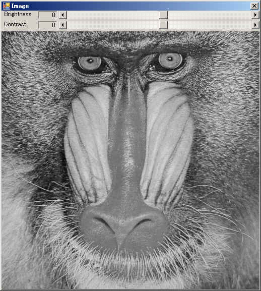
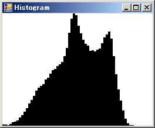

VB(VB2005)によるOpenCV使用のサンプルプログラムの４番目です。
全ソースは下記からダウンロードできます。
OpenCVHistogram.lzh


このサンプルプログラムは、OpenCV付属サンプルの「demhist.exe」をVB2005で作り直したものになります。
読み込んだイメージのヒストグラムを取得/表示し、ブライトネスとコントラストを調整できます。
基本的な動きはOpenCVサンプルと同じですが、HighGUIを使わずにWindowsのコントロールを使っています。
HighGUIを使わずにWindowsのコントロールを使っている点を除いては、
基本的にOpenCVのサンプルと同じです。
ただし、API呼び出しの関係でアンマネージ領域の操作部分で何箇所かコードが膨れているところはあります。
またヒストグラムの表示などはデータの取得以外はVB用のコードに最適化(?)しています。
メインフォームのコードは下記になります。
Option Explicit On
Option Strict On
Imports System.Runtime.InteropServices
Imports Histogram.cxTypes
Imports Histogram.cvTypes
Imports Histogram.Cv
Imports Histogram.CxCore
Imports Histogram.HighGUI
Public Class Frm_Image
'----------------------------------------------------------
'定数/定義
Private IMAGEFILENAME As String = "\samples\c\baboon.jpg"
'----------------------------------------------------------
'内部データ
Private mSrcImg As New IplImageWrapper '補正前イメージ
Private mDstImg As New IplImageWrapper '補正後イメージ
Private mHistPtr As IntPtr 'CvHistogramのポインタ
Private mHistSize As Integer = 64 'ヒストグラム個数
'Private mHistSizePtr As IntPtr 'ヒストグラム個数のポインタ
Private mRange0() As Single = {0, 256} 'ヒストグラムの値範囲
Private mRange0Ptr As IntPtr '値範囲のポインタ
Private mRangeTBLPtr As IntPtr '値範囲テーブルのポインタ
Private mLUTPtr As IntPtr
Private mLUTMatPtr As IntPtr
Private WithEvents mHistForm As Frm_Hist 'ヒストグラム表示フォーム
'----------------------------------------------------------
'----------------------------------------------------------
'フォームロード時
Private Sub Frm_Image_Load(ByVal sender As System.Object, ByVal e As System.EventArgs) Handles MyBase.Load
'初期処理
'mHistSizePtr = Marshal.AllocHGlobal(Marshal.SizeOf(GetType(Integer))) 'アンマネージ領域確保
'Marshal.WriteInt32(mHistSizePtr, 0, mHistSize) 'アンマネージ領域に転送
mRange0Ptr = Marshal.AllocHGlobal(Marshal.SizeOf(GetType(Single)) * mRange0.Length) 'アンマネージ領域確保
Marshal.Copy(mRange0, 0, mRange0Ptr, mRange0.Length) 'アンマネージ領域に転送
mRangeTBLPtr = Marshal.AllocHGlobal(Marshal.SizeOf(GetType(IntPtr)) * 1) 'アンマネージ領域確保
Marshal.WriteIntPtr(mRangeTBLPtr, 0, mRange0Ptr) 'アンマネージ領域に転送
'ヒストグラムの準備
mHistPtr = cvCreateHist(1, mHistSize, CV_HIST_ARRAY, mRangeTBLPtr, 1) 'ヒストグラムの生成
mLUTPtr = Marshal.AllocHGlobal(256) 'アンマネージ領域確保
mLUTMatPtr = cvCreateMatHeader(1, 256, CV_8UC1) '変換用行列のヘッダ作成
cvSetData(mLUTMatPtr, mLUTPtr, 0) 'ヘッダとデータの連結
'ヒストグラム表示用フォームの準備
mHistForm = New Frm_Hist
mHistForm.Show()
'イメージ読み込み
LoadImage(OpenCVUtility.GetDLLPath() + IMAGEFILENAME)
End Sub
'フォームが閉じられるとき
Private Sub Frm_Image_FormClosing(ByVal sender As Object, ByVal e As System.Windows.Forms.FormClosingEventArgs) Handles Me.FormClosing
'後始末
mSrcImg.Release()
mDstImg.Release()
cvReleaseHist(mHistPtr)
Marshal.FreeHGlobal(mRange0Ptr)
Marshal.FreeHGlobal(mRangeTBLPtr)
Marshal.FreeHGlobal(mLUTPtr)
cvReleaseMat(mLUTMatPtr)
End Sub
'----------------------------------------------------------
'イメージの読み込み
Private Sub LoadImage(ByVal Filename As String)
'解放
mSrcImg.Release()
mDstImg.Release()
'クリア
Scr_Brightness.Value = 0
Scr_Contrast.Value = 0
'読み込み
mSrcImg.Ptr = cvLoadImage(Filename, 0)
If mSrcImg.Ptr = IntPtr.Zero Then
MsgBox("イメージを読み込めません。- " + Filename)
Exit Sub
End If
'ウィンドウサイズ変更
Pic_Image.Size = mSrcImg.Size
Dim sz As Size = Pic_Image.Size
sz.Height += Pnl_Control.Height
Me.ClientSize = sz
'出力イメージ作成
mDstImg.Ptr = cvCloneImage(mSrcImg.Ptr)
'イメージ表示
mDstImg.Update()
Pic_Image.Image = mDstImg.Bitmap
Pic_Image.Refresh()
'ヒストグラム表示
UpdateHistogram()
End Sub
'----------------------------------------------------------
'ブライトネス変更
Private Sub Scr_Brightness_Scroll(ByVal sender As System.Object, ByVal e As System.Windows.Forms.ScrollEventArgs) Handles Scr_Brightness.Scroll
'値表示
Lbl_Brightness.Text = Scr_Brightness.Value.ToString
'イメージ更新
UpdateImage()
End Sub
'コントラスト変更
Private Sub Scr_Contrast_Scroll(ByVal sender As System.Object, ByVal e As System.Windows.Forms.ScrollEventArgs) Handles Scr_Contrast.Scroll
'値表示
Lbl_Contrast.Text = Scr_Contrast.Value.ToString
'イメージ更新
UpdateImage()
End Sub
'----------------------------------------------------------
'ヒストグラム表示フォームのサイズ変更時
Private Sub mHistForm_Resize(ByVal sender As Object, ByVal e As System.EventArgs) Handles mHistForm.Resize
'ヒストグラム表示
UpdateHistogram()
End Sub
'----------------------------------------------------------
'イメージ更新
Private Sub UpdateImage()
'イメージが読み込まれているか？
If mSrcImg.Ptr = IntPtr.Zero Then Exit Sub '読み込まれてない
'変換用テーブルの係数計算
Dim brightness As Integer = Scr_Brightness.Value
Dim contrast As Integer = Scr_Contrast.Value
Dim delta As Double
Dim a As Double, b As Double
If contrast > 0 Then
delta = 127.0 * contrast / 100
a = 255.0 / (255 - delta * 2)
b = a * (brightness - delta)
Else
delta = -128.0 * contrast / 100
a = (256.0 - delta * 2) / 255.0
b = a * brightness + delta
End If
'変換用テーブルの更新
For i As Integer = 0 To 255
Dim v As Integer = CInt(a * i + b)
If v < 0 Then v = 0
If v > 255 Then v = 255
Marshal.WriteByte(mLUTPtr, i, CByte(v))
Next
'変換
cvLUT(mSrcImg.Ptr, mDstImg.Ptr, mLUTMatPtr)
'表示
mDstImg.Update()
Pic_Image.Image = mDstImg.Bitmap
Pic_Image.Refresh()
'ヒストグラム表示
UpdateHistogram()
End Sub
'ヒストグラム表示の更新
Private Sub UpdateHistogram()
'出力イメージがあるか？
If mDstImg.Ptr = IntPtr.Zero Then Exit Sub '出力イメージがない
'表示範囲取得
Dim sx As Integer = mHistForm.Pic_Hist.ClientSize.Width
Dim sy As Integer = mHistForm.Pic_Hist.ClientSize.Height
If (sx = 0) Or (sy = 0) Then Exit Sub '表示できない
'ビットマップ作成
mHistForm.Pic_Hist.Image = New Bitmap(sx, sy)
'描画開始
Dim g As Graphics = Graphics.FromImage(mHistForm.Pic_Hist.Image)
g.Clear(Color.White)
'ヒストグラムの取得
Dim DstImgPtrPtr As IntPtr 'イメージへのポインタのポインタ
DstImgPtrPtr = Marshal.AllocHGlobal(Marshal.SizeOf(GetType(IntPtr))) 'アンマネージ領域確保
Marshal.WriteIntPtr(DstImgPtrPtr, 0, mDstImg.Ptr) 'アンマネージ領域に書込み
cvCalcArrHist(DstImgPtrPtr, mHistPtr, 0, IntPtr.Zero)
Marshal.FreeHGlobal(DstImgPtrPtr)
'ハッキリいってこの辺は美しくない
'スケーリング(各要素を0～syの値にする)
Dim histdata As CvHistogram
histdata = PtrToStructure(Of CvHistogram)(mHistPtr) 'CvHistogramの内容をマネージ領域にコピーする
Dim minval As Single, maxval As Single
cvGetMinMaxHistValue(mHistPtr, minval, maxval, IntPtr.Zero, IntPtr.Zero)
If maxval = 0 Then maxval = Integer.MaxValue
cvConvertScale(histdata.bins, histdata.bins, sy / maxval, 0)
'グラフ描画
Dim bin_w As Integer = CInt(sx / mHistSize)
For i As Integer = 0 To mHistSize - 1
Dim v As Integer = CInt(cvGetReal1D(histdata.bins, i))
g.FillRectangle(Brushes.Black, bin_w * i, sy - v, bin_w, v)
Next
'描画終了
g.Dispose()
g = Nothing
mHistForm.Pic_Hist.Refresh()
End Sub
End Class
|
cvCreateHist()の第４引数はfloat型配列のポインタテーブルのポインタになる訳ですが、
スマートなマーシャリングのやり方を知らないので（＾＾；；、
アンマネージ領域にテーブルを作ってそのアドレスを渡しています。
またcvScale()はcvConvertScale()、cvCalcHist()はcvCalcArrHist()など
OpenCVサンプル内では別名で定義されている関数は元の関数を呼び出すようにしています。